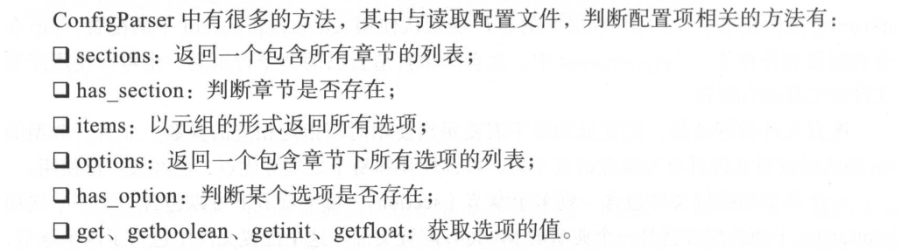
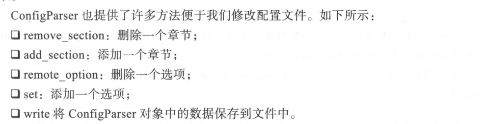

12.8. configparser模块¶
用于生成和修改常见配置文档
12.8.1. 配置文件示例¶
[default]
serveraliveinterval = 45
compression = yes
compressionlevel = 9
[bitbucket.org]
user = hg
[topsecret.server.com]
port = 50022
forwardx11 = no
12.8.2. 用python生成这样的一个配置文档¶
import configparser
config = configparser.ConfigParser()
config['default'] = {'ServerAliveInterval':'45',
'Compression':'yes',
'CompressionLevel':'9'}
config['bitbucket.org'] = {}
config['bitbucket.org']['User'] = 'hg'
config['topsecret.server.com'] = {'port':'50022',
'Forwardx11':'no'}
with open('example.ini','w') as configfile:
config.write(configfile)
12.8.3. 读取¶
import configparser
config = configparser.ConfigParser()
print(config.read('example.ini'))
#查看所有的标题
print(config.sections())
#['default', 'bitbucket.org', 'topsecret.server.com']
#查看标题section1下所有key=value的key
options = config.options('default')
print(options)
#['serveraliveinterval', 'compression', 'compressionlevel']
#查看标题section1下所有key=value的(key,value)格式
items_list = config.items('topsecret.server.com')
print(items_list)
#[('port', '50022'), ('forwardx11', 'no')]
12.8.4. 增删改查¶
import configparser
config = configparser.ConfigParser()
config.read('example.ini',encoding = 'utf-8')
#删除整个标题
config.remove_section('bitbucket.org')
#删除标题下的option
config.remove_option('topsecret.server.com','port')
#添加一个标题
config.add_section('info')
#在标题下添加options
config.set('info','name','derek')
#判断是否存在
print(config.has_section('info')) #True
print(config.has_option('info','name')) #True
#将修改的内容存入文件
config.write(open('new_example.ini','w'))
12.8.5. 修改后的配置文件¶
[default]
serveraliveinterval = 45
compression = yes
compressionlevel = 9
[topsecret.server.com]
forwardx11 = no
[info]
name = derek
配置文件Background.ini
[Background]
Image = Whitecristal.png
LeftMargin = 8
TopMargin = 8
RightMargin = 8
BottomMargin = 8
Outside-LeftMargin = 8
Outside-TopMargin = 8
Outside-RightMargin = 8
Outside-BottomMargin = 8
[Background2]
Image = Whitecristal2.png
LeftMargin = 18
TopMargin = 28
RightMargin = 38
BottomMargin = 48
Outside-LeftMargin = 8
Outside-TopMargin = 8
Outside-RightMargin = 8
Outside-BottomMargin = 8
12.8.6. 读取配置项¶
#!/usr/bin/env python
# -*- coding:utf8 -*-
# auther; 18793
# Date：2019/11/9 22:11
# filename: 1.读取配置文件.py
import configparser
config = configparser.ConfigParser()
config.read("Background.ini")
sections = config.sections() # 返回所有的配置块
print("\033[31m配置块\033[0m：", sections)
o = config.options("Background2") # 返回所有的配置项
print("\033[31m配置项:\033[0m", o)
v = config.items("Background2") # 返回配置项的内容
print("\033[31m内容：\033[0m", v)
# 根据配置块和配置项返回内容
access = config.get("Background", "Outside-RightMargin")
print(access)
Image_info = config.get("Background", "Image")
print(Image_info)
12.8.7. 新增配置项¶
#!/usr/bin/env python
# -*- coding:utf8 -*-
# auther; 18793
# Date：2019/11/9 22:20
# filename: 2.写配置项.py
import configparser
config = configparser.ConfigParser()
config.add_section("Mysqld") #添加新的配置块
config.set("Mysqld", "port", "3306") #添加新的配置项
f = open("Background.ini","a+")
config.write(f)
f.close()
12.8.8. 修改配置项¶
#!/usr/bin/env python
# -*- coding:utf8 -*-
# auther; 18793
# Date：2019/11/9 22:23
# filename: 3.修改配置项.py
import configparser
ini_name = "Background.ini"
config = configparser.ConfigParser()
config.read(ini_name)
config.set("Mysqld", "port", "3307") # 修改配置项
f = open(ini_name, "r+")
config.write(f)
f.close()
12.8.9. 删除配置项¶
#!/usr/bin/env python
# -*- coding:utf8 -*-
# auther; 18793
# Date：2019/11/9 22:27
# filename: 4.删除配置项.py
import configparser
ini_name = "Background.ini"
config = configparser.ConfigParser()
config.read(ini_name)
config.remove_option("Mysqld", "port") # 删除配置项
config.remove_section("Mysqld") # 删除配置块
f = open(ini_name, "w+")
config.write(f)
f.close()
12.8.10. 参考地址¶
常用模块和使用案例 https://www.cnblogs.com/wf-linux/archive/2018/08/01/9400354.html
Python3读写ini配置文件 https://sre.ayunw.cn/posts/python3_read_and_write_ini_config_file/